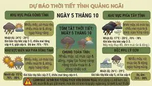

John Scalzi
@scalzi.com
· 10/05 23:16· 命中「OpenAI」
Counter-proposal to Sam Altman: Go fuck yourself www.theguardian.com/technology/2...

8 200+ 次搜尋 產經2026.10.06
產經2026.10.06
 生活2026.10.05
生活2026.10.05
 生活2026.10.03
生活2026.10.03
 時事2026.10.02
時事2026.10.02
Social Lab（OpView 社群口碑資料庫）每週彙整各平台熱門事件。榜上的數據以圖表呈現， 這裡列出每週彙整的標題與觀測期間，點進去看完整排行。
 PTT
PTT
 Facebook
Facebook
 Dcard
Dcard
 Instagram
Instagram
 YouTube
YouTube
 新聞
新聞
 Facebook 意見領袖
Facebook 意見領袖
 Instagram 意見領袖
Instagram 意見領袖
 YouTube 意見領袖
YouTube 意見領袖
Social Lab 依社群聲量統計的各平台人氣意見領袖前三名。
Bluesky 的全站熱門話題，以英語圈的娛樂、體育、政治為主，僅供參考。
以 30 小時內、依讚數與轉發數排序，已過濾掉 AI 繪圖標籤與明顯洗版內容。
Counter-proposal to Sam Altman: Go fuck yourself www.theguardian.com/technology/2...
“.. Asked specifically where he diverges from Anthropic and its CEO Dario Amodei, Altman said, ‘we believe that the world should accept some bad things happening for the benefits of this technology and people having the agency.’” @politico.com www.politico.com/news/2026/10...
The original Google search algorithm that was wizard magic was machine learning. Same with videogame enemies learning flocking techniques and figuring out how to beat you based on your tendencies. LLM stans fucked this up just let the scam artists define what AI is now because they are dumb.
The world does not consent (but Sam Altman does not believe consent is required). But the world would consent to many bad things happening to Sam Altman and OpenAI.
Literally everything I've written for public consumption is in the training data, often in more than one language. Via the Anthropic settlement I'm getting (not nearly enough) compensation for about 20 of them, but it's doubtful I'll ever get compensation for 28 years of writing on my blog, etc.
I remember being a little salty before I had read Pope Leo’s encyclical on AI that he had invited the Anthropic guy to be there. It made me nervous he had gotten snowed and would pull his punches. It feels so good to learn that actually Anthropic was livid and almost pulled out of the event
New today in the old tale of externalizing costs while privatizing profits: OpenAI CEO Sam Altman tells Politico, “We believe the world should accept some bad things happening for the benefits of this technology.”
Gemini: Your life is like a game of Monopoly. You don’t fully understand the rules and it seems like it will never end.
CM @chiosse.bsky.social calls out the AI execs on some of their statements today, made under oath: "I know that a couple companies said that they supported the Raise Act, but let's be real here: It is well known that OpenAI, Anthropic, Google, Meta lobbied against the Raise Act for a year."
There is an argument that some AI-psychosis-sufferers tend to make which I find very gross, stupid, and bad. It goes something like, “the way you are talking about Claude sounds a lot like how they used to talk about [some historically marginalized group], sooo, you better think about that”.
Of all the things to say about an emulator project dev using an llm i think this is the funniest
llm trained on user was blocked for this post
First poster for Luca Guadagnino’s ‘ARTIFICIAL’, starring Andrew Garfield as Sam Altman. The film follows the story of when OpenAI fired and rehired their CEO Sam Altman within 1 week.
real answer: so you understand the formal model at a deep and intuitive level granting you the ability to compose the right formal concepts into clear descriptions that LLM agents can productively act on
“Anthropic is hiring a Political Programs Lead to build and run the programs through which Anthropic, its political action committees, and its employees take part in the political process, including our engagement with candidates and causes at all levels of government.” What the heck is this?
OpenAI CEO Sam Altman: “We believe the world should accept some bad things happening for the benefits of this technology.”
KNOWING it broke copyright laws. We have receipts from OpenAI, Anthropic and Meta to my knowledge.